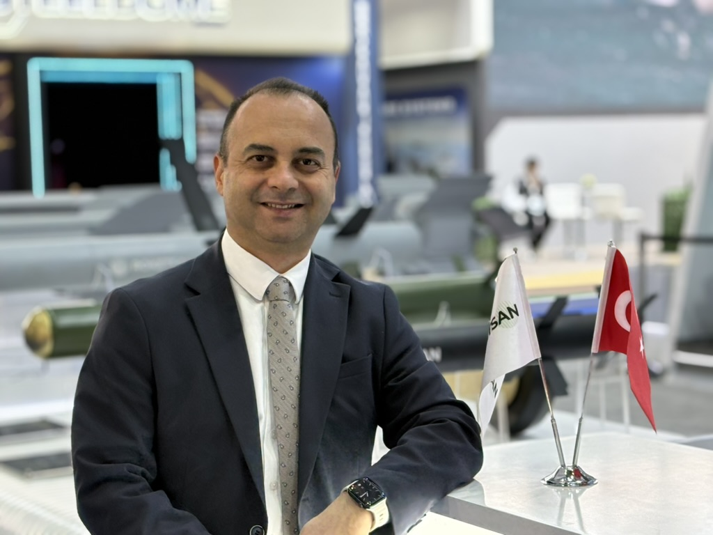

Ingénieur Aéronautique | Responsable Technique | Consultant en Ingénierie.
Ingénieur aéronautique de formation, j'ai plus de 28 ans d'expérience dans les secteurs de l'aéronautique, de la défense et de l'automobile. Mon parcours a commencé dans le domaine des hélicoptères militaires, avant de m'amener à travailler sur le développement de systèmes complexes, à diriger des équipes techniques et à participer à des projets internationaux.
Au fil des années, j'ai eu l'occasion de découvrir différents secteurs, d'assumer de nouvelles responsabilités et de travailler avec des personnes aux parcours très variés. J'aime apprendre, explorer de nouvelles perspectives et chercher des solutions concrètes à des problèmes complexes.
J'ai créé ce site pour partager un peu de mon parcours professionnel, mais aussi mes centres d'intérêt en dehors de l'ingénierie.
Diplômé: 1998
Étudier l'ingénierie aéronautique à l'Université technique d'Istanbul a été la réalisation d'un rêve d'enfance : devenir ingénieur aéronautique.
Diplômé: 2002
Après mes études en aéronautique, ce master en génie mécanique m'a permis d'approfondir mes connaissances techniques et d'élargir ma vision de l'ingénierie.
Diplômé: 2025
Mon intérêt pour l'histoire et la politique internationale m'a finalement conduit, des années plus tard, à entreprendre des études universitaires en relations internationales.
Roketsan Saudi Missile Industries, Riyad, Arabie Saoudite
En tant que consultant en ingénierie chez Roketsan Saudi Missile Industries, je participe à des programmes internationaux de transfert de technologie et de développement conjoint. Mon travail porte notamment sur l'ingénierie système, le transfert de production, l'intégration et la qualification des systèmes. J'apporte également un soutien technique aux relations avec les clients et aux activités de développement commercial dans la région.
Travailler dans un environnement international me permet de mettre à profit mon expérience d'ingénieur dans un contexte différent, tout en continuant à apprendre et à découvrir de nouvelles façons de travailler.
Togg (Turkiye's Automobile Joint Venture Group), Ankara-Turkiye
Après de nombreuses années dans l'industrie de la défense, j'ai eu l'occasion de mettre mon expérience au service d'un autre secteur technologique en rejoignant Togg, un constructeur turc de véhicules électriques.
J'ai d'abord travaillé sur les systèmes Drive-by-Wire, principalement dans les domaines de l'ingénierie système, de la définition des exigences et de l'architecture système, tout en contribuant au développement et aux essais de prototypes. J'ai ensuite rejoint le domaine des systèmes avancés d'aide à la conduite (ADAS), où j'ai assumé le rôle de responsable de fonctionnalité (*Feature Owner*) et coordonné les activités d'ingénierie liées au développement de ces fonctions.
Cette expérience dans l'automobile m'a permis de découvrir d'autres pratiques d'ingénierie, de me familiariser davantage avec le développement basé sur des modèles et de porter un regard nouveau sur les systèmes à forte composante logicielle.
Roketsan Industrie de Missiles S.A., Ankara-Turkiye
J'ai passé plus de 17 ans chez Roketsan, où j'ai travaillé sur des systèmes de missiles guidés et de lancement, en occupant différentes fonctions d'ingénierie et de management technique. J'ai commencé par la conception de systèmes et l'intégration sur plateformes, avant d'assumer progressivement des responsabilités plus larges dans le développement de systèmes, la coordination des équipes et les décisions techniques.
L'une des étapes les plus importantes de mon parcours a été d'assurer la responsabilité technique de grands programmes de développement de missiles. J'ai travaillé avec des équipes d'ingénieurs de différentes disciplines, en coordonnant les activités depuis la définition des exigences et la conception préliminaire jusqu'à l'intégration, aux essais et à la qualification. J'ai également dirigé une unité spécialisée dans l'intégration sur plateformes et participé à l'intégration de systèmes de missiles sur différents véhicules et plateformes militaires.
Durant mes dernières années chez Roketsan, j'ai occupé le poste d'ingénieur en chef pour les systèmes de missiles antichars, avec des responsabilités liées à la gestion du cycle de vie des produits, au soutien technique et aux nouvelles intégrations. Tout au long de cette période, les échanges avec des clients, des partenaires et des équipes d'ingénierie d'horizons différents ont constitué une part importante de mon expérience professionnelle.
Farhym Automobile, Ankara-Turkiye
J'ai travaillé brièvement chez Farhym Automotive en tant qu'ingénieur projet, en participant à des projets de conception d'aménagements intérieurs pour autobus. C'était ma première expérience dans l'industrie automobile.
Aviation de l'Armée de Terre, Ankara-Turkiye
Ma carrière d'ingénieur a commencé dans le domaine des hélicoptères militaires, au sein du 5e Centre principal de maintenance de l'armée de terre turque. J'ai principalement travaillé sur les réparations structurales et l'ingénierie de maintenance des hélicoptères, ce qui m'a permis d'acquérir une expérience concrète des opérations de maintenance et de révision en atelier spécialisé.
Pendant ces années, j'ai cherché à mieux comprendre les hélicoptères au-delà de mes responsabilités directes. Grâce à mes recherches personnelles, à des formations spécialisées et aux échanges avec des ingénieurs et techniciens de différentes disciplines, j'ai approfondi mes connaissances des principes du vol, de la mécanique et des systèmes d'hélicoptères.
J'ai toujours aimé apprendre de nouvelles choses, qu'elles soient liées à l'ingénierie ou à des domaines complètement différents. Certains de mes centres d'intérêt sont nés de mon expérience professionnelle, tandis que d'autres viennent tout simplement de ma curiosité personnelle.
Vivre en Arabie saoudite m'a donné envie d'apprendre l'arabe. Je n'en suis encore qu'au début, mais j'aime découvrir cette langue et mieux comprendre la culture qui m'entoure.